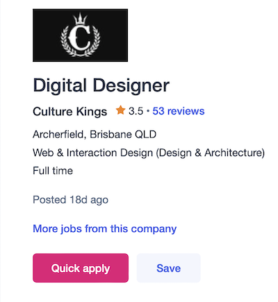
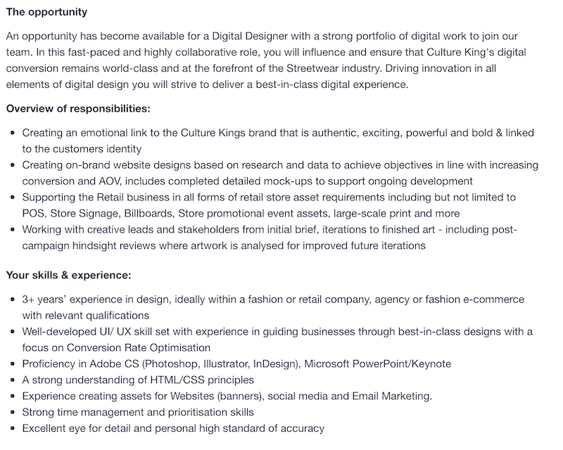
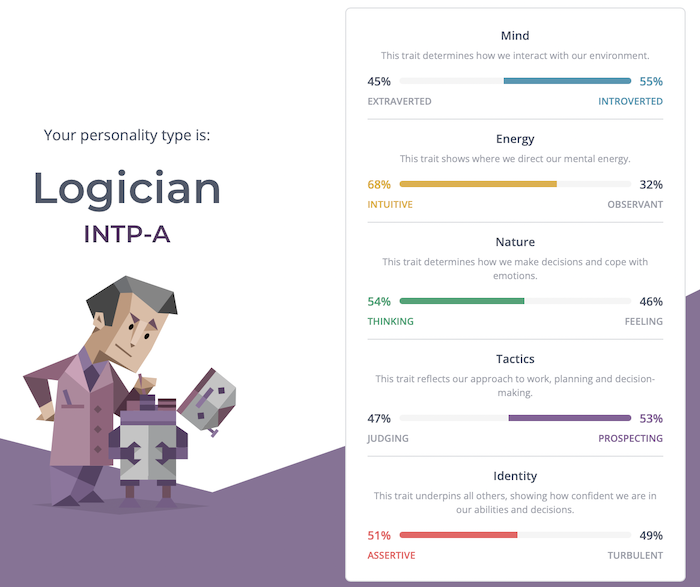
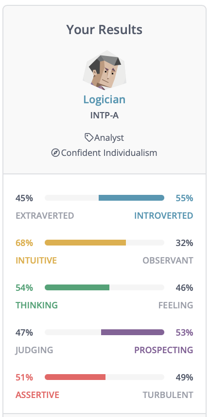
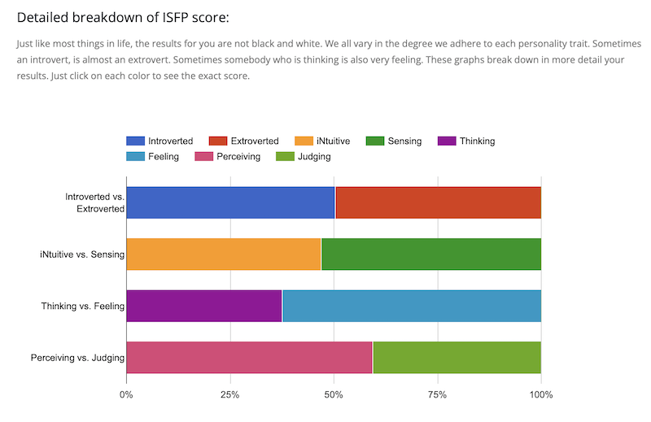
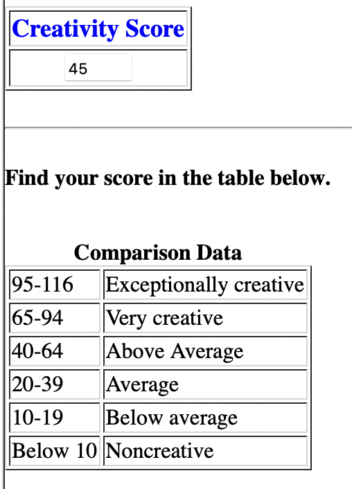

S3971045 - S3971045@student.rmit.edu.au
I was born and raised on Norfolk Island, an external Australian Territory, located 1412km off the east coast of Australia, in the South Pacific with a population of only approximately 1600 locals. I relocated to Brisbane after completing Year 12 to study a bachelor of Multimedia at Griffith University, as tertiary education is not accessible on island. There I learned the basics of programming languages such as HTML, Javascript and how to program Lego Mindstorms. I have also delved into design tools such as Illustrator, Photoshop and InDesign. I speak English and a local dialect called ‘Norf’k’ which is derived from both Tahitian and 18 th century English tongue.
My hobbies include, listening to podcasts, I read a lot of articles, join in discussion online and watch YouTube videos endlessly when I’m trying to understand a new topic or idea. This helps me have a better understanding of how things work and how technology can shape the future. I enjoy keeping up to date with current technology trends, especially before software and hardware enters the mainstream. I’ve always enjoyed fashion and more specifically the increasing intersection between fashion and technology. I see this as an emerging market with wearable devices etc. increasing becoming a part of every day life.
I’ve started to delve back into programming as I start this new course to refresh my memory, whether it’s an app teaching me ‘Python’ or ‘Swift’, the core of each language is similar just with different commands.
My Interest in information technology started at an early age. I remember being 8 years old when I saw the Apple iBook in Turquoise displayed at a local store. I didn’t know what it was, or what it did, but I knew I wanted to learn more. Growing up our family had our first computer which was connected to the internet via a dial-up connection. I would sit for hours after school going through the settings of the computer just to see how I could learn more about how it worked. The early days of the internet piqued more curiosity; I would try to accomplish a task such as downloading music onto an MP3 player which would come with issues. So, I would set out to problem solve until I could find a solution, learning so much along the way. Tinkering with computers is how I first learnt about how software and hardware work together which is so valuable when you’re growing up as it sets a great foundation for learning more when you’re older.
I chose to come to RMIT as I was at a crossroads in my life, I currently work for an online Pharmacy, helping in the dispensary to dispense medication and fulfill online orders. I enjoy my work, however I decided I want to study I.T to increase my employability, in a field I already have real life experience with and want to pursue further. I hope to diversify my understanding across all I.T concepts and emerging trends during this course, with more focus on the practical side aiming for a career somewhere in this variable industry. I would like to further understand the basics of programming, UX design, cloud computing and industry standards which will assist me further post-grad in finding a job I’m passionate about. I’m excited to learn it all!
Digital Designer (Web & Interaction Design) https://www.seek.com.au/job/58333698?type=standout#sol=033e8ff9c3a6c57d77fc8a06e074d9cedb796df7 This position is for a Web & Interaction designer for a fashion retailer called Culture Kings. This company has both brick-and-mortar stores but more importantly a large e-commerce store. The job advertised is for someone to implement their skillset in digital areas such as User Interface and User Experience design to ensure the customers experience is elevated resulting in higher sales for the company. Culture Kings requires the employee of this role to be proficient in Adobe CS programs such as Illustrator, Photoshop and InDesign as all these products can be used to create a more immersive website experience. You must also have a high level of understanding in both HTML and CSS as these are crucial to creating and designing websites. Most importantly I believe, that for this role you need to have a great amount of knowledge of UI and UX design. Building a cohesive website that is not only intuitive but sticks to the brand DNA whilst actively pushing for conversions is the main goal of this position. 3 years of experience in design (ideally in fashion or retail) is required for this role.


I have had previous experience in HTML and CSS but not enough that I would feel confident applying for a job like this. My current job of 6 years has me heavily involved in working with our online Pharmaceutical store. This has given me a lot of experience when it comes to the day-to-day operations of running an online store. I work a lot in the back end of this website ensuring our customers experience is smooth. I find this experience will be valuable for finding my future career.
To apply for this position, I would need to learn more about HTML and CSS as well as doing short courses on the Adobe CS suite. This is to make sure I’m up to date with the latest versions of these programs as they always change. Adobe offers a whole range of free training and tutorials for their creative suite. I would need to find work experience in the fashion or retail industry as I would need to learn more about this industry and customers’ expectations of design elements when using an online store for shopping.
Myers Briggs Test Result. The following is a small introduction to my personality type according to the MyersBriggs Test conducted on the 16 Personalities website. ‘Assertive Logician (INTP-A). Logicians pride themselves on their unique perspectives and vigorous intellect. They can’t help but puzzle over the mysteries of the universe – which may explain why some of the most influential philosophers and scientists of all time have been Logicians. This personality type is quite rare, but with their creativity and inventiveness, Logicians aren’t afraid to stand out from the crowd.’ #1


Learning Style Quiz Result. The following is a brief description and visualisation of my learning style as analysed by learningstylequiz.com. ‘I am a Visual-ISFP learner (INTROVERTED SENSING FEELING PERCEIVING) Just like most things in life, the results for you are not black and white. We all vary in the degree we adhere to each personality trait. Sometimes an introvert, is almost an extrovert. Sometimes somebody who is thinking is also very feeling. These graphs break down in more detail your results. Just click on each color to see the exact score.’ #3

Kellogg School of Management Creativity Test. This test is summarised as a ‘test that helps you determine if you have the personality traits, attitudes, values, motivations, and interests that characterize creativity. It is based on several years' study of attributes possessed by men and women in a variety of fields and occupations who think and act creatively.’ #4

After reading the results and scores of these tests a number of key personality and artistic traits have become clear. One being that I’m quite straight down the middle with a lot of aspects of my personality. I’m neither too outspoken/extroverted or to quiet/introverted. I am ‘driven by curiosity’ #5 which I do believe to be very true, although this doesn’t always translate to productivity as my personality trait can lend itself to being impatient and dissatisfied. As a Visual ISFP Learner I retain information when learning in real world situations. And If there’s an emotional connection I am more likely to engage with an idea or topic. I learn well when in groups and through brainstorming and when study materials are readily available. I have an above average creativity score.
The results of these tests reinforces ideas I already had about my strengths when working in a group. I find working in groups engaging as I have a personality that makes people feel welcome and I enjoy brainstorming and working together. But when needed I can resign to my own project to do solo work without feeling as though I need a group to assist me to complete delegated tasks. I would also make sure when working in a team that I ask for help when I need it as my learning style could be quite different to others. I don’t think this would hinder the ability for teamwork but I would need to make sure my team is aware I may require additional clarification. This would be through ways that I understand (such as visual learning, or through the Visual-ISFP framework) as shown in my test results.
When forming teams I gravitate towards a group that already had a clear leader as I would work well under someone who directs where the team needs to go. Not to say I’m a sheep, as I definitely make my voice heard when needed. But if I can focus on my own work and not have to rally a team together, I feel I would be more efficient
My idea is to create a network where health professionals and pharmacists can quickly and efficiently communicate with each other for patient based specialised services and queries. It would focus predominantly on creating a direct line of communication between doctors (in both hospitals and private practices) and pharmacists (in both public and community settings). It would be available on desktop via a cloud service and as a mobile application. Both versions would be powered by cloud computing software. The program would also ideally be integrated with existing industry standard software used in the health space. This project has come about from personal experience working in the healthcare space. Communication between pharmacists and doctors is practiced already in the industry as it’s such an important part of providing quality care to patients, but the methods used are time consuming and dated. Usually communication is via fax, phone or email, with additional barriers at each step. I believe a new state-wide system needs to be implemented to vastly improve the time taken out of healthcare workers days trying to communicate sometimes complex problems with one another before coming to a solution. ‘Approximately 6% of hospital admissions are associated with adverse drug events and high error rates during transfer of care. Poor communication was the most important common factor contributing to medication errors. Increased interprofessional collaboration between doctors and pharmacists could therefore reduce the considerable medication-related morbidity and mortality.’ #6 Put simply, the benefit of this system would be to securely have a direct line of communication between doctors, pharmacists and other healthcare professionals to avoid any errors. Common mistakes on prescriptions and issues with transferring of care can take up to 24 hours to resolve using today’s industry standard of communication between professionals.
The idea for this program is to build an end-to-end encrypted messaging and information service which includes text, images and audio/video conferencing. Once enrolled, the following healthcare professionals listed will have a direct line with each other: Pharmacists, Doctors practising at Hospitals/Clinics/Private Practices and select administration staff. This program is beneficial to patients as it takes out the time-consuming task of healthcare professionals trying to communicate through normal means of email, call and fax. Example: Pharmacist is presented with a script from a patient who has just been discharged from a hospital. The pharmacist notices an error in the script which could cause a potentially fatal drug interaction with the patient’s current medication. They need to contact the doctor to discuss and amend. Current industry practice is to either email, waiting 24-48 hours for a reply, or call the hospital, and be passed from department to department, put on hold, or wait for doctor to call back if they even receive the message from the receptionist. This happens too often and takes too long. Using this system, the pharmacist can search for the doctor, contact them directly and have the discussion cutting out the middlemen and waiting. The functionality of this app means the doctor can even write a new script, take a photo and send through to pharmacist for dispensing. In reverse, a doctor or GP might need to discuss or simply request a patients current medication list with the patient’s pharmacist but doesn’t have time to call. As the service is encrypted and only used by registered medical professionals, they can transfer med charts using the messaging feature so they’re not sending confidential information via email or fax. Private patient information is only being seen by the medical professionals and no other staff.
The goal of this program is to create clear and confidential lines of communication between pharmacists, doctors and other medical professionals. We would try to keep the foundation of this program and app as basic as possible in the beginning to avoid any complications that can come with designing a complex app. We would build this application on Amazon Web Services using Python coding language due to its versatility. AWS is a perfect cloud platform which can handle a steady or quick increase in traffic. Usually when professionals are required by law to sign up to certain services as a requirement of their license large influxes can occur close to its due date. We would also use React Native to create a cross-platform mobile app that works with the website. This is beneficial so we don’t have to use the Swift language for Apple products specifically which would take more time.
If we were successful in building and deploying this service with the help of the State Government, I believe the NSW State Healthcare Industry would set a new standard for how healthcare professionals provide critical care to patients in Australia. The doctors and pharmacists would have a clear real time channel of communication with each other resulting in better outcomes for patients and avoiding any errors that occur due to a breakdown in lines of communication.
#1 - 16Personalities.com (2022) Introduction|Logician (INTP) Personality, 16Personalities website, accessed 17 September 2022. https://www.16personalities.com/intp-personality
#2 16Personalities.com (2022) Introduction|Logician (INTP) Personality, 16Personalities website, accessed 17 September 2022. https://www.16personalities.com/intp-personality
#3 learningstylequiz.com (2022) I am a Visual-ISFP learner | Language Learning Style Quiz | Live Lingua, LearningStyleQuiz website, accessed 17 September 2022. https://www.learningstylequiz.com/quiz/results/Visual-ISFP/203105
#4 kellogg.northwestern.edu (2022) How Creative Are You?, kellogg.northwestern.edu website, accessed 17 September 2022. https://www.kellogg.northwestern.edu/faculty/uzzi/ftp/page176.html
#5 - 16Personalities.com (2022) Introduction|Logician (INTP) Personality, 16Personalities website, accessed 17 September 2022. https://www.16personalities.com/intp-personality
#6 - Easton K, Morgan T, Williamson M. Medication safety in the community: a review of the literature. Sydney: National Prescribing Service; 2009